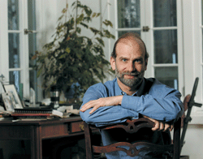

Dr. Dobb's Journal, April 2006
The Dr. Dobb's Journal Excellence in Programming Award is an annual award that acknowledges individuals who, in the spirit of innovation and cooperation, have made significant contributions to the advancement of software development. Past recipients include leaders and thinkers in the development community such as Linus Torvalds, James Gosling, Erich Gamma, Guido van Rossum, Jon Bentley, Anders Hejlsberg, P.J. Plauger, and Guy Steele Jr., among others.
This year's recipient—Bruce Schneier—is unique in that he has long been a member of the Dr. Dobb's family, so to speak. But while Bruce has been a contributing editor, columnist, and writer for Dr. Dobb's Journal, that's not why he is receiving the award.
Bruce is this year's award recipient because of the many important contributions he has made in his chosen specialty of computer security. These include designing the Blowfish and Twofish encryption algorithms, both of which he wrote about in DDJ and the latter of which was a finalist for the Federal Advanced Encryption Standard. Bruce is also the author of eight books, including Applied Cryptography: Protocols, Algorithms, and Source Code in C, which is a seminal work for software developers.
Bruce is the founder of and chief technical officer for Counterpane Internet Security. He has served on the board of directors of the International Association for Cryptologic Research, and is an Advisory Board member for the Electronic Privacy Information Center. Bruce holds a Bachelor's degree in physics from the University of Rochester, and a Master's degree in computer science from American University.
In short, by never wavering from focus on technical excellence and open communication, Bruce Schneier represents the finest the software development community has to offer.
DDJ